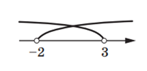

Системи лінійних нерівностей з однією змінною, їх розв’язування
►
Розв’язком системи нерівностей з однією змінною називають значення
змінної, при якому правильною є кожна з нерівностей системи.
►
Розв’язати систему — означає знайти всі її розв’язки або довести, що
розв’язків немає.

Усі розв’язки системи нерівностей утворюють множину розв’язків системи
нерівностей. Якщо система розв’язків не має, то говорять, що множиною її
розв’язків є порожня множина. Таким чином, можна сказати, що розв’язати
систему нерівностей означає знайти множину її розв’язків.
Наприклад, у задачі
«Розв’яжіть систему нерівностей
0x ≥ -1,
|x|≥0
відповідь буде такою: «множина дійсних чисел».
Система нерівностей
x>5,
x<5
розв’язків не має, тобто множиною її розв’язків є порожня множина.
Завдання
Розв’яжіть систему нерівностей
3x-1>-7,
3-4x-9
Розв’язання. Маємо:
3x>-6,
-4x <-12,
x>-2,
x<3,

За допомогою координатної прямої знайдемо переріз множин розв’язків нерівностей даної системи,тобто переріз проміжків (–∞; 3) i (–2; +∞)(рис.1.4). Шуканий переріз складається із чисел, які
задовольняють нерівність –2 < x < 3. Ця множина є числовим проміжком,
який позначають (–2; 3) (читають: «проміжок від –2 до 3»).
Вiдповiдь можна записати одним зі способів: (–2; 3) або –2 < x < 3.
Контрольна робота
Завдання 1
Розв’яжіть нерівність x-1/2+x/3≤1/6
Завдання 2
Розв’яжіть систему нерівностей
x≤1
x≻2
Завдання 3
Відомо, що 2 < x < 3 i 1 < y < 4. Оцініть значення виразу xy.
Завдання 4
Розв’яжіть нерівність -3<1-2x/5-2<1
Завдання 4
Знайдіть множину розв’язків системи нерівностей
x-1>2x-3
4x+5>x+17